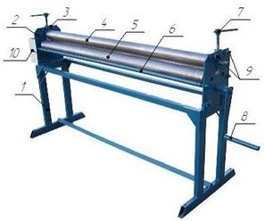
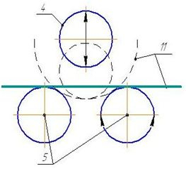

Вальцы ручные трехвалковые ВР-1500
58 000 ₽В наличии
- Размеры станка
- 1940х600х 1000 мм
- Масса
- 150 кг
Назначение
Вальцы ручные трёхвалковые ВР-1250, предназначены для вальцевания цилиндрическихзаготовок из мягких сортов листовой стали обыкновенного качества ГОСТ 380-94. Вальцы используются для изготовления различных элементов вентиляционных систем, водостоков, дымоходов на небольших производствах и мастерских.
Особенности
Вальцы состоят из следующих основных частей :
1 – основание;
2 – щечки;
3 – откидная балка;
4 – прижимной вал;
5 – опорные валы;
6 – стяжные шпильки;
7 – прижимной винт;
8 – приводная рукоятка;
9 – фиксирующие вставки;
10 – кожух;
С помощью прижимных винтов 7 поднять вверх прижимной вал 4. Вальцуемый лист 11 расположить между опорными 5 и прижимным 4 валамизаготовка должна располагаться параллельно валам). Далее одновременным вращением прижимных винтов 7 опускаем постепенно ( ½ оборота) прижимной вал 4 на величину, необходимую для формирования требуемого радиуса вальцевания. После каждого опускания прижимноговала 4 вальцуемый лист 11 прокатывается по всей плоскости с помощью вращения приводной рукоятки 8 механического привода (связанного с опорными валами через шестерни ). Для извлечения заготовки 11 из вальцов возвращаем прижимной вал 4 в верхнее положение с помощью вращения прижимных винтов 7. При необходимости снятия прижимного вала вынуть фиксирующие вставки 9 из откидной балки 3 и вывести из зацепления винт 7 подъёмного устройства.
1 – основание;
2 – щечки;
3 – откидная балка;
4 – прижимной вал;
5 – опорные валы;
6 – стяжные шпильки;
7 – прижимной винт;
8 – приводная рукоятка;
9 – фиксирующие вставки;
10 – кожух;




С помощью прижимных винтов 7 поднять вверх прижимной вал 4. Вальцуемый лист 11 расположить между опорными 5 и прижимным 4 валамизаготовка должна располагаться параллельно валам). Далее одновременным вращением прижимных винтов 7 опускаем постепенно ( ½ оборота) прижимной вал 4 на величину, необходимую для формирования требуемого радиуса вальцевания. После каждого опускания прижимноговала 4 вальцуемый лист 11 прокатывается по всей плоскости с помощью вращения приводной рукоятки 8 механического привода (связанного с опорными валами через шестерни ). Для извлечения заготовки 11 из вальцов возвращаем прижимной вал 4 в верхнее положение с помощью вращения прижимных винтов 7. При необходимости снятия прижимного вала вынуть фиксирующие вставки 9 из откидной балки 3 и вывести из зацепления винт 7 подъёмного устройства.
Характеристики
|
ПАРАМЕТР |
ЗНАЧЕНИЕ |
|---|---|
|
Наибольшая длина вальцевания, мм. |
1500 |
|
Максимальная толщина листа, мм. |
1,5 |
|
Количество валов, шт. |
3 |
|
Диаметр верхнего вала, мм. |
70 |
|
Габаритные размеры (LxBxH), мм. |
1940х600х 1000 |
|
Масса, кг. |
150 |
Комплект поставки
БАЗОВЫЙ КОМПЛЕКТ ПОСТАВКИ:
- Станок в сборе;
- Паспорт.
- Станок в сборе;
- Паспорт.